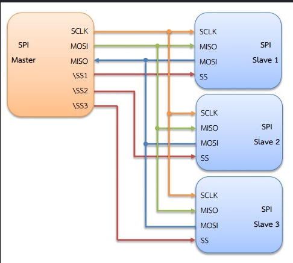

จำลองการต่อ SPI แบบ Master 1 ตัว เชื่อมกับ Slave 3 ตัว
ในการใช้งานจริง Master 1 ตัว สามารถเชื่อมต่อกับ Slave ได้หลายตัว โดย SCLK, MOSI, MISO ใช้สายร่วมกัน (Shared Bus) แต่ต้องมี สาย SS (Slave Select) แยกสำหรับแต่ละ Slave
Master จะเลือกสื่อสารกับ Slave ตัวใดตัวหนึ่งโดยดึง SS ของ Slave ตัวนั้นให้เป็น LOW ส่วน SS ของ Slave ที่ไม่ได้ใช้จะเป็น HIGH (ไม่ทำงาน)

Master ดึงสาย SS ของ Slave ที่ต้องการให้เป็น LOW ส่วน Slave อื่นยังเป็น HIGH (ไม่ทำงาน)
Master ส่งข้อมูลผ่าน MOSI ทีละบิต พร้อมสัญญาณ SCLK ทุก Slave ได้รับสัญญาณ แต่เฉพาะตัวที่ SS = LOW เท่านั้นที่ทำงาน
Slave ที่ถูกเลือกส่งข้อมูลกลับผ่าน MISO พร้อมกับที่ Master ส่ง (Full-Duplex) เมื่อเสร็จ Master ดึง SS กลับเป็น HIGH
digitalWrite(SS1, LOW); เลือก Slave 1
SPI.transfer(data); ส่งข้อมูล
digitalWrite(SS1, HIGH); ปล่อย Slave 1